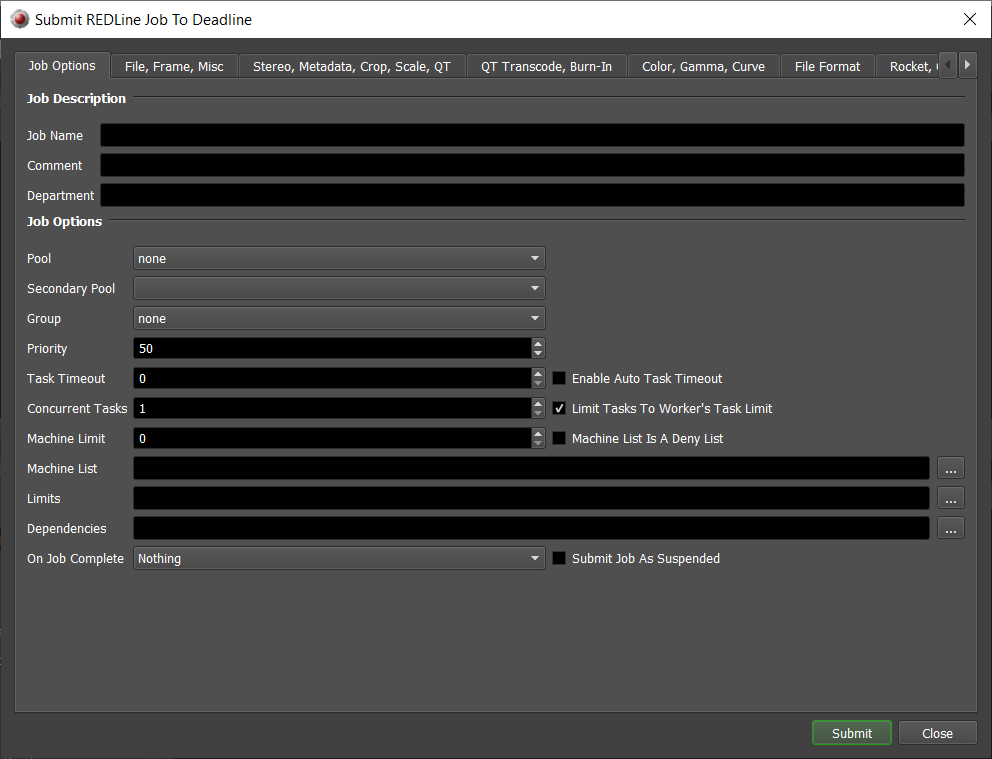
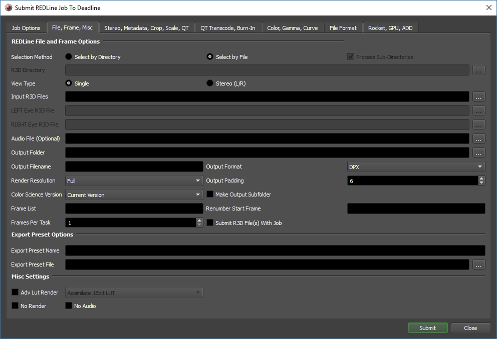
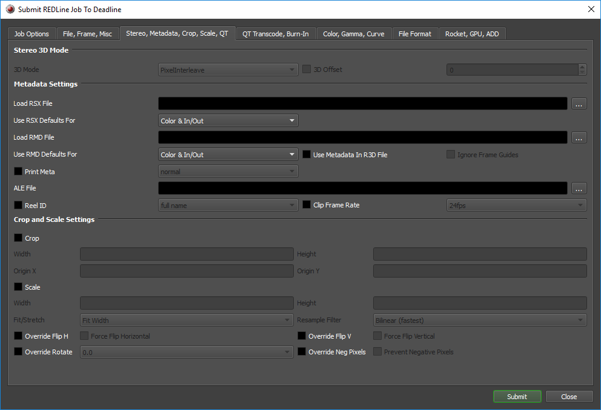
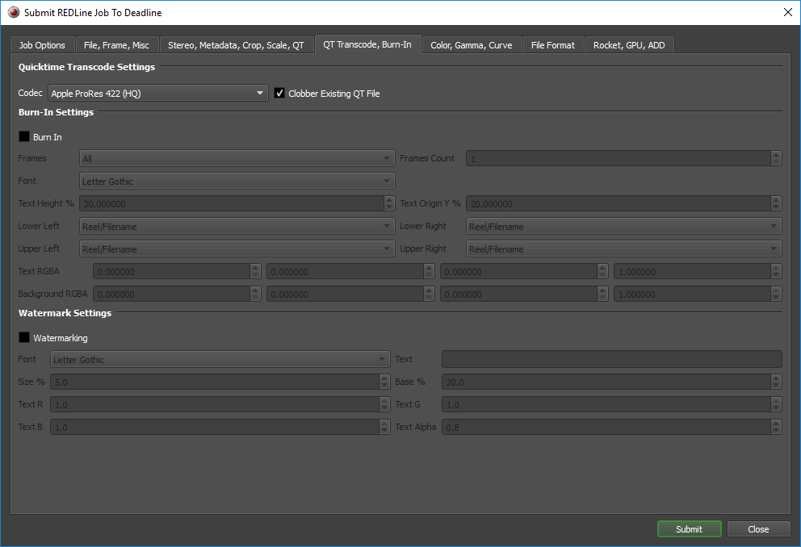
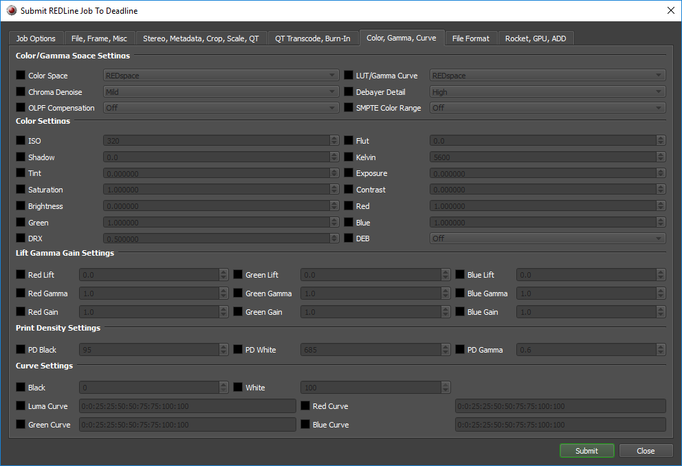
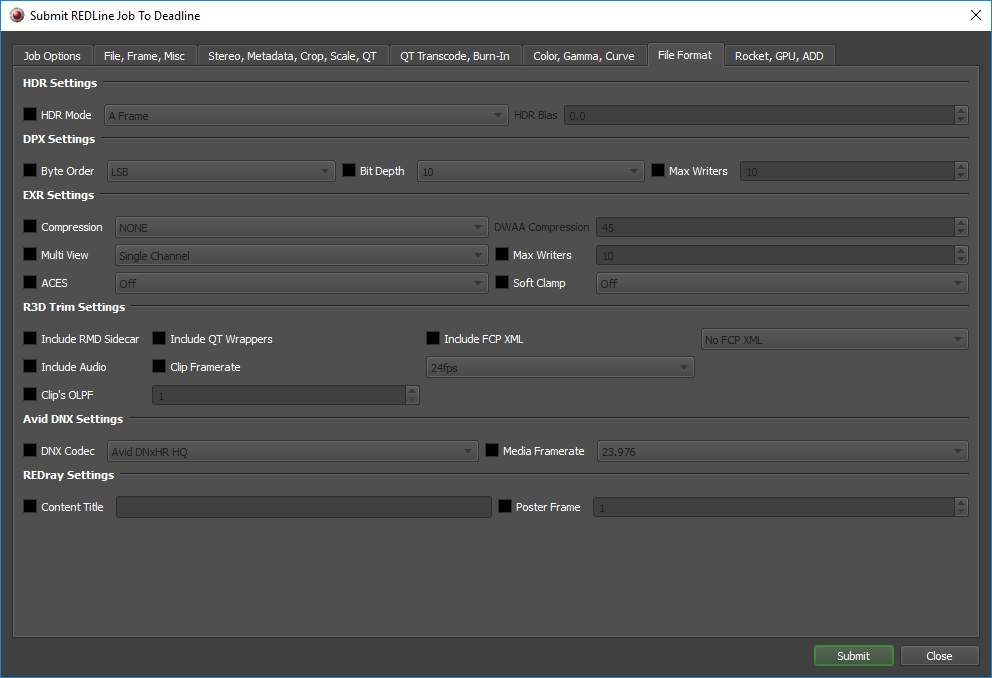
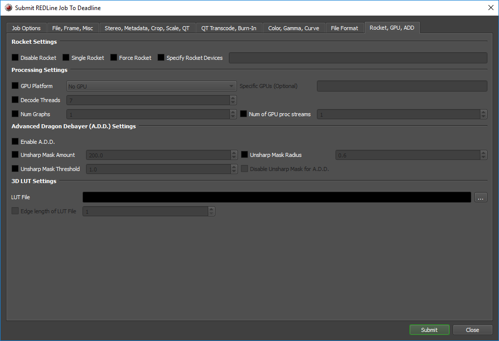
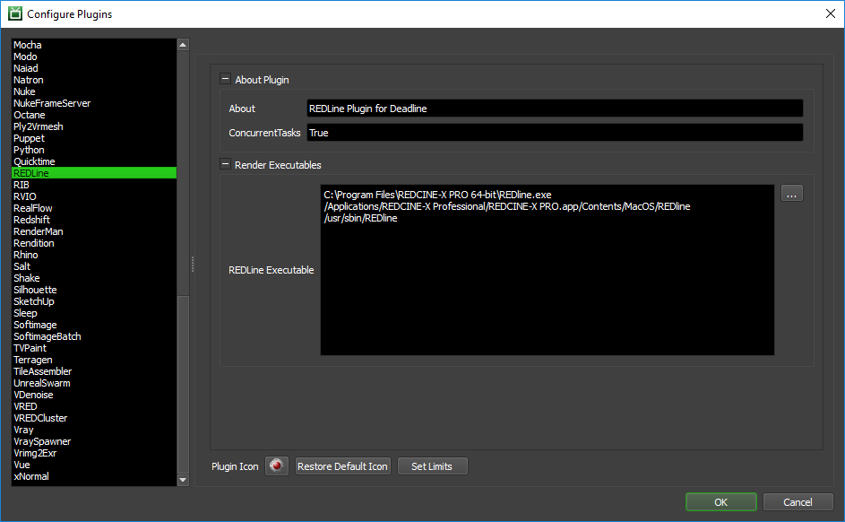

REDLine¶
Job Submission¶
You can submit REDLine jobs from the Monitor. REDLine is the command line tool that ships with REDCINE-X, and previously with REDAlert.
Submission Options¶
The general Deadline options are explained in the Job Submission documentation. Deadline basically supports all the options that are available in the REDCINE-X application. It also supports the ability to specify RSX files to use when rendering, so you can set your options in REDCINE-X and then use them to render the job through Deadline. Please refer to your REDCINE-X documentation for more information about these additional render options.
File, Frame, Misc¶
REDLine File and Frame Options
Select by Directory: Choose a root directory to scan for all *.R3D files.
Process Sub-Directories: Optionally choose to scan sub-directories as well for *.R3D files.
R3D Directory: Choose a root directory to scan for all *.R3D files.
Select by File: Choose by individual *.R3D file selection.
Single: Choose a single view file.
Input R3D Files: Specify the R3D file(s) you want to render.
Stereo (L/R): Choose matching stereo view files.
LEFT Eye R3D File: Specify the LEFT EYE R3D file you want to render.
RIGHT Eye R3D File: Specify the RIGHT EYE R3D file you want to render.
Audio File (Optional): Optionally, specify an input audio file.
Output Folder: The folder where the output files will be saved.
Output Filename: The prefix portion of the output filename. It is not necessary to specify the extension.
Output Format: The output format. This will determine the filename extension.
Render Resolution: The resolution to render at.
Output Padding: The output padding size.
Color Science Version: The color science version.
Make Output Subfolder: Makes subdirectory for each output.
Frame Settings
Frame List:The list of frames to render if rendering an animation.
Renumber Start Frame: The new start frame number (optional).
Frames Per Task: This is the number of frames that will be rendered at a time for each job task.
Submit R3D File(s) With Job: If this option is enabled, the input file(s) will be submitted with the job, and then copied locally to the Worker machine during rendering.
Export Preset Options
Export Preset Name: Optionally, load settings from an export preset: [default = none].
Export Preset File: Optionally, the file to load export presets from:
/Users/$USER/Library/Application Support/Red/RedCineX/Presets/UserExportPresets.xml.
Misc Settings
Adv Lut Render: Override the Adv Lut Render.
No Render: Forces redline to abort before any rendering occurs.
No Audio: Disable all audio output.
Stereo, Metadata, Crop, Scale, QT¶
Stereo 3D Mode
3D Mode: 3D Export Mode (PixelInterleave,Side By Side,Right Top, Left Bottom,Left Top, Right Bottom,Row Interleave).
3D Offset: Offset in frames of the left eye from the right (or right eye from the left if negative) [default = 0].
Metadata Settings
Load RSX File: Use look metadata in REDLine RSX file.
Use RSX Defaults For: What to use RSX defaults for (Color & In/Out,Color Only).
Load RMD File: Use look metadata in REDLine RMD file.
Use RMD Defaults For: What to use RMD defaults for (Color & In/Out,Color Only).
Use Metadata In R3D File: Use look metadata in R3D as defaults (overridden for each value explicitly set).
Ignore Frame Guides: Use in conjunction with Use Metadata checkbox. Ignores frame guides.
Print Meta: Override Print Meta (header,normal,csv,header+csv,3D rig,per-frame lens+acc+gyro).
ALE File: Save an ALE file with the given filename.
Reel ID: Override Reel ID file naming convention (full name,FCP 8 Character).
Clip Frame Rate: Override Clip Frame Rate (23.976fps,24fps,25fps,29.97fps,30fps,47.952fps,48fps,50fps,59.94fps,60fps,71.928fps,72fps).
Crop and Scale Settings
Crop: If cropping should be enabled
Width: Crop demosaiced source before resize using Width.
Height: Crop demosaiced source before resize using Height.
Origin X: Crop demosaiced source before resize using origin X.
Origin Y: Crop demosaiced source before resize using origin Y.
Scale: If scaling should be enabled.
Width: Resize to X dimension.
Height: Resize to Y dimension.
Fit/Stretch: Fit source to destination (Fit Width,Fit Height,Stretch,Fit Width 2x,Fit Width .9x,Fit Height .9x,Fit Width 1.46x,Fit Width 1.09x,Fit Width 0.5x,Fit Height 0.5x,Fit Width 1.3x,Fit Height 1.3x,Fit Width 1.25x).
Resample Filter: Filter using the selected option (Bilinear (fastest),Bell (smoother),Lanczos (sharper),Quadratic (smoother),Cubic-bspline (smoother),CatmulRom (sharper),Mitchell (smoother),Gauss (smoother),WideGauss (smoothest),Sinc (sharpest),Keys (sharper),Rocket (sharper)).
Override Flip H: Override Force Flip Horizontal.
Force Flip Horizontal: 0 = Disables any horizontal flip setting in metadata, 1 = Forces the image to be flipped horizontally.
Override Flip V: Override Force Flip Vertical.
Force Flip Vertical: 0 = Disables any vertical flip setting in metadata, 1 = Forces the image to be flipped vertically.
Override Rotate: Rotates the image only 0.0, -90.0 and 90.0 degrees are currently accepted (0.0,-90.0,90.0).
Override Neg Pixels: Override Prevent Negative Pixels.
Prevent Negative Pixels: Prevents the scaler from generating negative pixel values. 0=off 1=on [default = 1].
QT Transcode, Burn-In¶
QuickTime Transcode Settings
Codec: QT codec to output.
Clobber Existing QT File: Do clobber an existing QT file. If disabled, ‘_Sxxx’ will be added for each new file.
Burn-In Settings
Burn In: Turn on burn in.
Frames: Do burn in for the specified frames (All,First,First & Last,Last,Count).
Frames Count: Number of frames to burn in [default = 1].
Font: The burn in font (Letter Gothic,Monaco,Courier,Lucida Type,Andale Mono,OCRA,Orator Std).
Text Height: Height of text in percent of output height.
Text Origin Y %: Burn in Y location in percent of output height.
Lower Left: The burn in for the lower left (Reel/Filename,Frames,Frames In Edit,Frames In Source,Edge Code,EXT/TOD Time Code).
Lower Right: The burn in for the lower right (Reel/Filename,Frames,Frames In Edit,Frames In Source,Edge Code,EXT/TOD Time Code).
Upper Left: The burn in for the upper left (Reel/Filename,Frames,Frames In Edit,Frames In Source,Edge Code,EXT/TOD Time Code).
Upper Right: The burn in for the upper right (Reel/Filename,Frames,Frames In Edit,Frames In Source,Edge Code,EXT/TOD Time Code).
Text RGBA: Text channels (red, green, blue, and alpha respectively).
Background RGBA: Background channels (red, green, blue, and alpha respectively).
Watermark Settings
Watermarking: Turn on watermarking.
Font: The watermark font to use (Letter Gothic,Andale Mono,OCRA,DejaVu Sans Mono).
Text: Enter the text to be displayed in the watermark.
Size %: Height of text in percent of output height [default = 5].
Base %: Watermark Y location in percent of height [default = 20].
Text R: Text red channel (0-1.0) [default = 1.0].
Text G: Text green channel (0-1.0) [default = 1.0].
Text B: Text blue channel (0-1.0) [default = 1.0].
Text Alpha: Text alpha channel (0-1.0) [default = 0.8].
Color, Gamma, Curve¶
Color/Gamma Space Settings
Color Space: Override the color space option.
LUT/Gamma Curve: Override the gamma curve.
Chroma Denoise: Override the noise reduction.
Debayer Detail: Override the detail.
OLPF Compensation: Override the post sharpen.
SMPTE Color Range: Override the SMPTE color range.
Color Settings
ISO: Override ISO.
Flut: Override Flut.
Shadow: Override Shadow.
Kelvin: Override kelvin.
Tint: Override tint.
Exposure: Override exposure.
Saturation: Override saturation.
Contrast: Override contrast.
Brightness: Override brightness.
Red: Override reg gain.
Green: Override green gain.
Blue: Override blue gain.
DRX: Override dynamic range extender.
DEB: Override dragon enhanced blacks.
Lift Gamma Gain Settings
Red Lift: Override Red Lift.
Green Lift: Override Green Lift.
Blue Lift: Override Blue Lift.
Red Gamma: Override Red Gamma.
Green Gamma: Override Green Gamma.
Blue Gamma: Override Blue Gamma.
Red Gain: Override Red Gain.
Green Gain: Override Green Gain.
Blue Gain: Override Blue Gain.
Print Density Settings
PD Black: Override Print Density Black.
PD White: Override Print Density White.
PD Gamma: Override Print Density Gamma.
Curve Settings
Black: Override Black Curve.
White: Override White Curve.
Luma Curve: Override Luma Curve. Enter 10 integer values separated by colon character (0:0:25:25:50:50:75:75:100:100).
Red Curve: Override Red Curve. Enter 10 integer values separated by colon character (0:0:25:25:50:50:75:75:100:100).
Green Curve: Override Green Curve. Enter 10 integer values separated by colon character (0:0:25:25:50:50:75:75:100:100).
Blue Curve: Override Blue Curve. Enter 10 integer values separated by colon character (0:0:25:25:50:50:75:75:100:100).
File Format¶
HDR Settings
HDR Mode: Override the HDR mode.
HDR Bias: HDR Bias (for Simple Blend and Magic Motion modes only) [default=0.0, range = -1.0 to 1.0].
DPX Settings
Byte Order: Override DPX Byte Order (LSB,MSB).
Bit Depth: Override DPX Bit Depth (10,16).
Max Writers: Override DPX Max Simultaneous Writers.
EXR Settings
Compression: Override EXR compression (NONE,RLE,ZIPS,ZIP,PIZ,PXR24,B44,B44A,DWAA,DWAB).
DWAA Compression: OpenEXR DWA Compression Level [default = 45, range 25 - 100].
Multi View: Override OpenEXR MultiView: Dual Channel=1, Single Channel=0 [default=0].
Max Writers: Override OpenEXR Max Simultaneous Writers [default = 10, range = 1 - 64].
ACES: Override OpenEXR ACES: On=1, Off=0 [default=0].
Soft Clamp: Override OpenEXR Soft Clamp: On=1, Off=0 [default=0].
R3D Trim Settings
Include RMD Sidecar: Include RMD sidecar.
Include QT Wrappers: Include Qt Wrappers.
Include FCP XML: Override Include FCP XML (No FCP XML,Full,Half,Quarter,Eighth).
Include Audio: Include Audio in R3D Trim.
Clip Framerate: Change Clip Framerate.
Clip’s OLPF: Change the clip’s OLPF. Use –olpfLookup to get available OLPF IDs for a clip.
Avid DNX Settings
DNX Codec: Avid DNX Codec to output [default = DNxHR HQ].
Media Framerate: Avid Media Framerate [default = 23.98].
REDray Settings
Content Title: Content Title.
Poster Frame: Poster Frame.
Rocket, GPU, ADD¶
Rocket Settings
Disable Rocket: Turn rocket support off even if it’s available.
Single Rocket: Limit REDline to a maximum of one Rocket.
Force Rocket: Forces the use of Red Rocket. If NO rockets are available the export will abort.
Specify Rocket Devices: Choose which Rocket(s) to use (for example: 0,2). Comma separated string.
Processing Settings
GPU Platform: Override if GPU should be enabled (No GPU,OpenCL,CUDA).
Specific GPUs (Optional): Optionally, specify which GPU devices to use by device index. Comma separated string such as 0 or 0,1 or 0,1,2.
Decode Threads: Number of simultaneous decompression threads (Default 7).
Num Graphs: Number of simultaneous graphs to process.
Num of GPU proc streams: Number of GPU processing streams.
Advanced Dragon Debayer (A.D.D.) Settings
Enable A.D.D.: Enable A.D.D.
Unsharp Mask Amount: A.D.D. Unsharp Mask Amount. (Default: 200).
Unsharp Mask Radius: A.D.D. Unsharp Mask Radius. (Default: 0.6).
Unsharp Mask Threshold: A.D.D. Unsharp Mask Threshold. (Default: 1.0).
Disable Unsharp Mask for A.D.D.: Disable Unsharp Mask for A.D.D. Processing.
3D LUT Settings
LUT File: Load a 3D LUT from file.
Edge length of LUT File: Edge length of the 3D LUT.
Plugin Configuration¶
You can configure the REDLine plugin settings from the Deadline Monitor. While in power user mode, select Tools -> Configure Plugins and select the REDAlert plugin from the list on the left.
Note, if the executable supports a MAJOR.MINOR.REVISION (9.0.123) numbering system in its path, then you will need to configure the explicit exe path to the particular revision that you have installed on your machines. Deadline does not track every possible revision available or indeed where it might be custom installed to, so a studio should verify their exe paths are correct for each application version they choose to use with Deadline. Multiple exe paths can still be declared and the first one that is found on a particular Worker on a particular platform will be used from the exe list.
Render Executables
REDLine Executable: The path to the REDline executable file used for rendering. Enter alternative paths on separate lines.
FAQ¶
Is REDCINE-X/REDAlert supported by Deadline?
Yes. Both applications ship with a command line application called REDLine, which Deadline uses to render. We only support the newer (~circa 2012 and onwards) 64bit version of REDLine.
Which Operating System(s) can I render REDLine jobs with?
Currently, REDLine is available on Windows and macOS, so you can render REDLine jobs on these operating systems. Path mapping is supported between the platforms, so you can submit on Windows and process on macOS or vice-versa.
Do you support REDLine’s RED rocket if installed?
Yes. Please see the additional options available in the Rocket, GPU, ADD tab of the Monitor submitter. You can also define which specific rockets are used per REDLine job.
Do you support GPU acceleration in REDLine?
Yes. We automatically support both OpenCL and CUDA based GPU affinity via the options available in the Rocket, GPU, ADD tab of the Monitor submitter. Additionally, Worker GPU affinity override is respected. By default, only CPU is used in REDLine jobs.
Error Messages and Meanings¶
This is a collection of known REDLine error messages and their meanings, as well as possible solutions. We want to keep this list as up to date as possible, so if you run into an error message that isn’t listed here, please contact Deadline Support and let us know.
Currently, no error messages have been reported for this plugin.

{kind=link}
{kind=link}
{kind=link}
{kind=link}
{kind=link}
{kind=link}
{kind=link}
{kind=link}